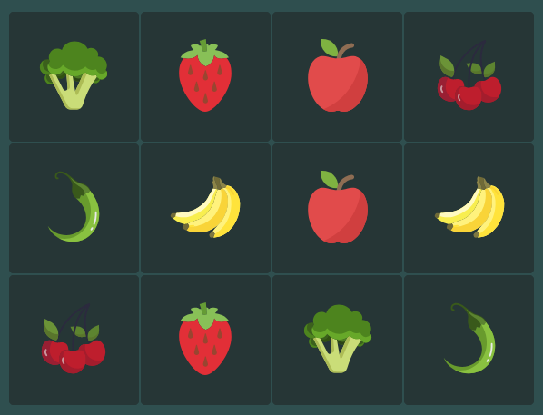

Bienvenu·e sur le site du Mémory de l'ENI made by Laety pendant sa 3ème semaine de cours ! Venez jouer avec nous et faites le meilleur score possible.
Règle du jeu :
- Retournez deux cartes. Si les images sont identiques, le jeu laisse les cartes visibles.
- Si les images sont différentes, les cartes se retournent face cachés là où elles étaient.
- La partie est terminée lorsque toutes les cartes ont été assemblées par paires.

Si vous voulez vous souvenir de votre score, inscrivez-vous via l'onglet S'ENREGISTRER. Le jeu garde en mémoire les 5 meilleurs scores. Si vous voulez relancer une partie, cliquez sur la barre d'espace.